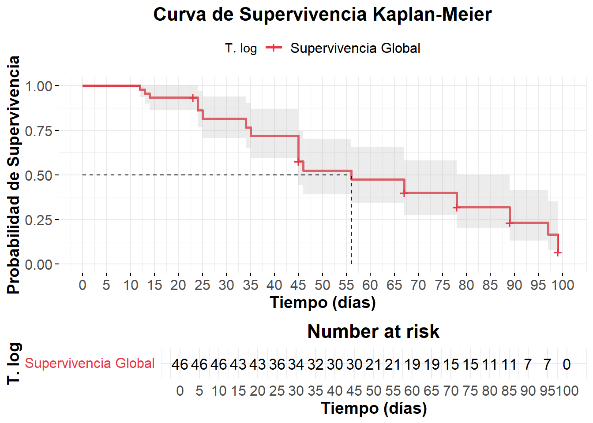

Ejercicio 1
Un inmunólogo dispone de los siguientes datos de un conjunto de pacientes con SIDA.
Realizar una estimación de la función de supervivencia sin utilizar ninguna de las covariables. Obtener el valor de la mediana, de la supervivencia a los 20 meses, la curva de Kaplan Meier y la mediana del tiempo de seguimiento.
Lectura de datos.
ejercicio1 <- haven::read_sav("~/Master_Bioestadistica/Supervivencia/Tema_01/Datos Ejercicio 1/ejercicio1.sav")
ejercicio1 |> dim(); summary(ejercicio1)
## [1] 46 7
## tiempos estado psicolog sexo estadio
## Min. :12.00 Min. :0.0000 Min. :0.0000 Min. :0.0 Min. :1.00
## 1st Qu.:27.25 1st Qu.:1.0000 1st Qu.:0.0000 1st Qu.:0.0 1st Qu.:1.00
## Median :45.50 Median :1.0000 Median :0.0000 Median :0.5 Median :2.00
## Mean :55.11 Mean :0.7826 Mean :0.4565 Mean :0.5 Mean :1.87
## 3rd Qu.:78.00 3rd Qu.:1.0000 3rd Qu.:1.0000 3rd Qu.:1.0 3rd Qu.:2.00
## Max. :99.00 Max. :1.0000 Max. :1.0000 Max. :1.0 Max. :3.00
## tratamie edad
## Min. :1.000 Min. :23.00
## 1st Qu.:2.000 1st Qu.:34.00
## Median :2.000 Median :44.50
## Mean :2.217 Mean :42.41
## 3rd Qu.:3.000 3rd Qu.:46.00
## Max. :3.000 Max. :67.00head(ejercicio1)
## # A tibble: 6 × 7
## tiempos estado psicolog sexo estadio tratamie edad
## <dbl> <dbl> <dbl+lbl> <dbl+lbl> <dbl+lbl> <dbl+lbl> <dbl>
## 1 14 1 1 [Si] 1 [Hombre] 3 [Estadío 3] 1 [Tratamiento a] 46
## 2 13 1 0 [No] 0 [Mujer] 3 [Estadío 3] 1 [Tratamiento a] 46
## 3 12 1 0 [No] 1 [Hombre] 3 [Estadío 3] 1 [Tratamiento a] 45
## 4 23 0 0 [No] 0 [Mujer] 3 [Estadío 3] 1 [Tratamiento a] 34
## 5 23 0 0 [No] 0 [Mujer] 3 [Estadío 3] 1 [Tratamiento a] 34
## 6 24 1 0 [No] 1 [Hombre] 3 [Estadío 3] 2 [Tratamiento b] 23- tiempos: tiempo de supervivencia
- estado: 0 - aguanta / 1 - censura
ejercicio1$tiempos |> hist()Transformación log de la función de supervivencia \(\hat{S}(t)\)
Estimo la función con KM y hago transformación para garantizar que el IC está dentro del intervalo [0,1].
KM_1 <- survival::survfit(Surv(tiempos, estado)~1, data=ejercicio1, conf.type='log')
KM_1
## Call: survfit(formula = Surv(tiempos, estado) ~ 1, data = ejercicio1,
## conf.type = "log")
##
## n events median 0.95LCL 0.95UCL
## [1,] 46 36 56 45 89
summary(KM_1)
## Call: survfit(formula = Surv(tiempos, estado) ~ 1, data = ejercicio1,
## conf.type = "log")
##
## time n.risk n.event survival std.err lower 95% CI upper 95% CI
## 12 46 1 0.9783 0.0215 0.937 1.000
## 13 45 1 0.9565 0.0301 0.899 1.000
## 14 44 1 0.9348 0.0364 0.866 1.000
## 24 39 3 0.8629 0.0522 0.766 0.971
## 25 36 2 0.8149 0.0593 0.707 0.940
## 34 34 2 0.7670 0.0647 0.650 0.905
## 35 32 2 0.7191 0.0690 0.596 0.868
## 45 30 6 0.5753 0.0762 0.444 0.746
## 46 23 2 0.5252 0.0773 0.394 0.701
## 56 21 2 0.4752 0.0776 0.345 0.655
## 67 19 3 0.4002 0.0765 0.275 0.582
## 78 15 3 0.3201 0.0739 0.204 0.503
## 89 11 3 0.2328 0.0688 0.130 0.415
## 97 7 2 0.1663 0.0632 0.079 0.350
## 99 5 3 0.0665 0.0443 0.018 0.246Código
survminer::ggsurvplot(
KM_1,
conf.int = TRUE, # Intervalos de confianza
conf.int.style = "ribbon", # Sombreado para el IC
break.time.by = 5, # Ejes en intervalos de 5
risk.table = TRUE, # Tabla de riesgo debajo
risk.table.height = 0.25, # Tamaño de la tabla de riesgo
risk.table.col = "black", # Color del texto de la tabla de riesgo
pval = TRUE, # Mostrar p-valor
surv.median.line = "hv", # Línea en la mediana de supervivencia
legend.title = "T. log", # Título de la leyenda
legend.labs = c("Supervivencia Global"), # Etiqueta de la leyenda
palette = c("#E63946"), # Color principal de la curva
xlab = "Tiempo (días)", # Etiqueta del eje X
ylab = "Probabilidad de Supervivencia",# Etiqueta del eje Y
title = "Curva de Supervivencia Kaplan-Meier", # Título principal
ggtheme = theme_minimal() + # Estilo de la gráfica
theme(
plot.title = element_text(hjust = 0.5, size = 16, face = "bold"),
axis.title = element_text(size = 14, face = "bold"),
axis.text = element_text(size = 12),
legend.position = "bottom",
legend.text = element_text(size = 12)
)
)
Valor de la mediana.
Surv(tiempos, estado == 0)
- Surv() crea un objeto de supervivencia.
- tiempos: Variable que indica el tiempo hasta el evento o censura.
- estado == 0: Define que el evento de interés ocurre cuando estado == 0 (es decir, considera 0 como el evento, en lugar del típico 1).
~ 1
- Se ajusta un modelo sin covariables, lo que significa que se estima una única curva de supervivencia para toda la población
conf.type = “log”
- Define que los intervalos de confianza se calculen en la escala logarítmica (log-log), lo cual mejora la precisión en situaciones con eventos raros o en la cola de la distribución.
Mes en el cual el 50 % de los individuos de la cohorte han experimentado el evento de interés. Indica el punto en el cual la probabilidad de que un individuo sobreviva es del 50 %.
follow_up_1 <- survival::survfit(Surv(tiempos, estado==1)~1, data=ejercicio1, conf.type="log")
follow_up_1Call: survfit(formula = Surv(tiempos, estado == 1) ~ 1, data = ejercicio1,
conf.type = "log")
n events median 0.95LCL 0.95UCL
[1,] 46 36 56 45 89Supervivencia a los 20 meses.
t_objetivo <- 20
idx <- which(KM_1$time == t_objetivo)idx_before <- max(which(KM_1$time <= t_objetivo))
idx_after <- min(which(KM_1$time >= t_objetivo))
t_before <- KM_1$time[idx_before]
t_after <- KM_1$time[idx_after]
S_t_before <- KM_1$surv[idx_before]
S_t_after <- KM_1$surv[idx_after]
# Interpolación lineal
if (t_before == t_after) {
S_t <- S_t_before
} else {
S_t <- S_t_before + (S_t_after - S_t_before) * (t_objetivo - t_before) / (t_after - t_before)
}
S_t[1] 0.9347826summary(KM_1, times = 20, extend = TRUE) Call: survfit(formula = Surv(tiempos, estado) ~ 1, data = ejercicio1,
conf.type = "log")
time n.risk n.event survival std.err lower 95% CI upper 95% CI
20 43 3 0.935 0.0364 0.866 1S_t <- 0.935
se_Greenwood <- 0.0364
set.seed(12345)
simu_normal <- rnorm(1000, mean = S_t, sd = se_Greenwood)
hist(simu_normal, breaks=30, probability = TRUE, col = "blue",
main = paste("Aproximación Normal para S(", t_objetivo, ")", sep = ""),
xlab = "S(t)", ylab = "Densidad")
curve(dnorm(x, mean = S_t, sd = se_Greenwood), col = "red", lwd = 2, add = TRUE)
abline(v = S_t, col = "black", lty = 2) # estimación de S(t)cat("S(8):", S_t, "\nError estándar de Greenwood:", se_Greenwood, "\n")S(8): 0.935
Error estándar de Greenwood: 0.0364 Mediana del tiempo de seguimiento.
Independiente al evento de interés, relacionado con la duración del seguimiento de los pacientes. Tiempo medio en el que los individuos fueron seguidos antes de que terminara el estudio o se censuraran.
median(ejercicio1$tiempos)[1] 45.5follow_up <- survival::survfit(Surv(tiempos, estado==0)~1, data=ejercicio1, conf.type="log")
follow_upCall: survfit(formula = Surv(tiempos, estado == 0) ~ 1, data = ejercicio1,
conf.type = "log")
n events median 0.95LCL 0.95UCL
[1,] 46 10 99 99 NASolventamos el problema de las colas (no sé qué problema es. ah, el del extremo del intervalo) para el tiempo mediano de seguimiento: cambiando el 1 por el 0 si tenemos muchos empates. entonces la estimacion de la mediana del tiempo de seguimiento mejora.
Quantiles of the potential follow up time distribution based on the Kaplan-Meier method
applied to the censored times reversing the roles of event status and censored.
Table of quantiles and corresponding confidence limits:
q quantile lower upper
<num> <num> <num> <num>
1: 0.00 NA NA NA
2: 0.25 NA NA NA
3: 0.50 NA 89 NA
4: 0.75 78 67 NA
5: 1.00 23 23 23
Median with interquartile range (IQR):
Median (IQR)
<char>
1: NA (78.00;NA)es bastante posible que no se alcance la mediana porque el 50 % de los individuos no llegan a alcanzar el evento. el 75 % de los individuos se les sigue 78 meses y ya, se les pierde el seguimiento. en muchas ocasiones no puedo aportar la mediana si el pronóstico es bueno.
en este caso se podría criticar el experimento diciendo que el tiempo de seguimiento es muy corto.